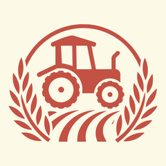

Explore more in biology...
Doctor
Doctors diagnose disease, provide treatment, counsel patients with injuries, diseases or illnesses. The specific duties depend upon the speciality you pursue in your MBBS. .
B.Pharmacy
As a community pharmacist your job is all about helping patients and the public, assessing their conditions and making decisions about which medicines they should take.
B.Agriculture
An agriculturist, agriculturalist, agrologist, or agronomist (abbreviated as agr.) is a professional in the science, practice, and management of agriculture and agribusiness.
forensic
Forensic science is the use of scientific methods or expertise to investigate crimes or examine evidence that might be presented in a court of law.
Bsc Nursing
Nursing is the diagnosis and treatment of human responses and advocacy in the care of individuals, families, groups, communities and the student must have a minimum of two years of general nursing .
Lets start your journey by giving this entrance exams...
NEET
National Eligibility cum Entrance Test
The National Eligibility cum Entrance Test (Undergraduate) or NEET, formerly the All India Pre-Medical Test, is an Indian nationwide entrance examination conducted by the National Testing Agency for admission in undergraduate medical programs.
 )

CET
Common Entrance Test
The examination is conducted in four subjects namely Physics, Chemistry, Mathematics and Biology. KCET 2023 syllabus is based on a higher secondary curriculum. The KCET exam duration for every subject is 80 minutes.
CSIR NET
Council of Scientific and industrial Research
Joint CSIR-UGC NET Fellowship programme is aimed at National Science & Technology Human Resource Development. A large number of JRFs are awarded each year by CSIR to candidates after qualifying the Test conducted by it.

CUET
Common University Entrance Test
The Common University Entrance Test (CUET), formerly Central Universities Common Entrance Test (CUCET) is a standardized test in India conducted by the National Testing Agency at various levels—CUET (UG), CUET (PG), and CUET (PhD), for admission to undergraduate, postgraduate, and doctorate programmes in Central
NEST
National Entrance Screening Test
Staff Selection Commission (SSC) is an organisation under the Government of India to recruit staff for various posts in the various ministries and departments of the government of India and in subordinate offices and agencies.